5．非结合代数
近代环论，或者更恰当地说，环论的一个推广，也包含非结合代数。这里乘法运算是非结合的而且是非交换的；线性结合代数的其他性质则仍然保持。今天已有好几种重要的非结合代数。历史上最重要的一种类型是李代数。习惯上用［a，b］表示这种代数的两个元素a，b的积。乘法的运算规律是
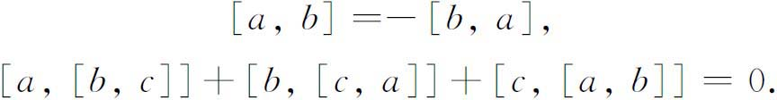
两者取代了交换律和结合律。上述第二个性质叫雅可比恒等式。两个向量的向量积就满足这两个性质。
李代数L中的一个理想L1是这样一个子代数，它使得L的任何一个元素a和L1的任何一个元素b的积［a，b］仍属于L1。一个单李代数是没有非平凡理想的李代数。如果一个李代数没有交换理想，就叫它做半单李代数。
李代数产生于李对连续变换群的结构的研究。为此，李引进无穷小变换的概念。(50)粗略地说，一个无穷小变换是，将点移动一个无穷小距离的变换。李将它用符号表示成
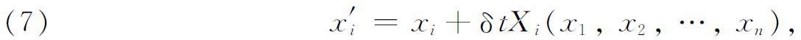
其中δt是一个无穷小量，或者表示成
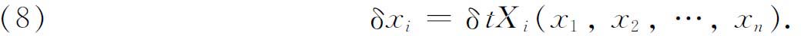
这个δt是对群的参数作一个小的改变所引起的结果。例如，假设一个变换群是由下式给出：
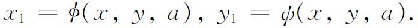
设a0是参数a的值使得φ和Φ在a＝a0时表示恒等变换：
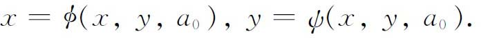
如果a从a0改变到a0＋δa，则按泰勒定理有
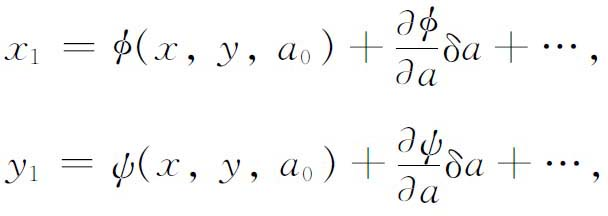
从而忽略δa的高次幂就得到
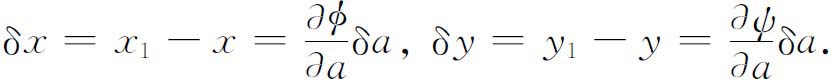
对于固定的
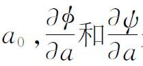
是x和y的函数，可写成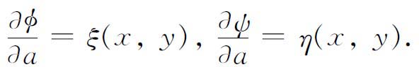
于是
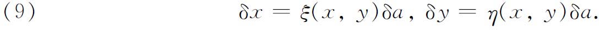
如果δa是δt，就得到（7）或（8）。方程（9）表示群的一个无穷小变换。
如果f（x，y）是x和y的解析函数，对它施以一个无穷小变换的效应是用
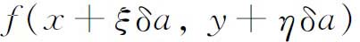
替换f（x，y），按泰勒定理，计算到一阶，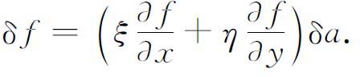
算子
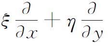
是无穷小变换（9）的另一种表现形式，因为只要知道其中一个就可给出另一个。这样的算子在微分算子的通常意义下可以相加与相乘。
独立的无穷小变换的个数，或者对应的独立算子的个数，就是原来变换群中参数的个数。现在用X1，X2，…，Xn表示（独立的）无穷小变换或对应的算子，它们确定了变换的李群。但同样重要的是，它们本身是一个群的生成元。虽然乘积XiXj不是线性算子，但表达式
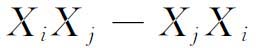
是一个线性算子，称为Xi和X j的交错子（alternant），记作
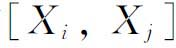
。对于这个乘法运算，算子群就变成一个李代数。李的工作是从研究具有r个参数的有限单（连续）群的结构开始的。他发现李代数的四种主要类型。基灵（Wilhelm K．J．Killing，1847—1923）(51)发现，就全部单代数来说，不仅有这四个类型而且还有五个例外情况，它们是含14，52，78，133和248个参数的单代数。基灵的工作有缺陷，由嘉当作了弥补。
嘉当在他的博士论文《论有限和连续变换群的构造》（Sur la structure des groupes de transformations finis et continus）(52)中给出了变数和参变数取值在复数域中的全部单李代数的一个完全分类。像基灵一样，嘉当发现，全部单李代数分成四个类型和五个例外代数。嘉当明显地构造出这些例外代数。1914年(53)嘉当又确定了实变数和实参变数的全部单代数。这些结果现在仍然是基本的。
很像抽象群的情形，用表示论来研究李代数已经进行得很多。嘉当在他的博士论文和1913年的一篇文章(54)中，发现了单李代数的不可约表示。一个关键性的结果是由外尔(55)得到的。特征为0的一个代数封闭域上的半单李代数的任何表示都是完全可约的。